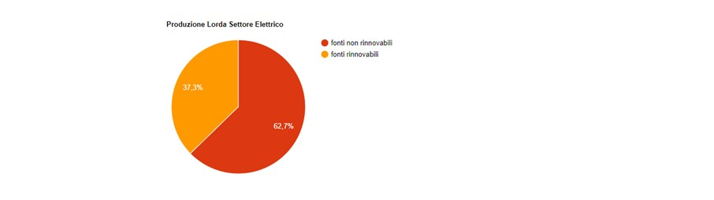

The Italian Power Market
The power market in Italy has a recent history of high import (one of the highest in the world) and a significant production from natural gas.
I fornitori = The (power) suppliers
I distrubitori = The distributors
I gestori = The network operators (managers)
La riparazione dei Guasti = Fault repair
Cliente tutelato = Protected customer
Clienti liberi = Free customers
Fossil and Renewable
In Italy electricity is produced through fossil resources like coal, oil and natural gas, and renewable resources like hydropower and solar power. In 2016, 37.3% of the gross national production of electricity came from renewable resources according to a report from GSE.
Terna SpA
Terna SpA operates and controls the power grid just like Statnett in Norway, Svenska Kraftnät in Sweden and Fingrid in Finland. Their task is to deliver electricity to the regional and local power grid.
Suppliers have the task of buying wholesome power and sell it to the end-consumer (vendita al dettaglio). Furthermore, they have the task of respecting the conditions of the contract signed by the user, invoicing and customer assistance.
There are many active power suppliers in Italy. The biggest operators in Italy are the following:
Enel Energia is one of the main companies within the energy sector in Italy. It is a multinational producer and distributor of electricity.
Eni Gas e Luce, founded in 1953 have supplied electricity to Italians since world war two. This company is engaged in production, transportation and distributing of oil and gas.
Edison Energia was founded in 1894, and is the oldest Italian company in the energy sector. Their service of distributing electricity and natural gas is active all over Italy.
Acea Energia, founded in Rome, is active in production, sales and distribution sectors of energy with particular fondness of energy from renewable sources.
E.On Energia is one of the world leaders when it comes to renewable energy. It is based in Germany but has a big market share in many countries in Europe. In Italy they distribute natural gas in both the regulated market and the free market.
Difference between distributors and operators
The distributors (i distributori) are responsible for the final delivery to the customer: they transport the energy in medium and low voltage through the city networks. They deal with the management of the distribution network and the meters they own. In addition, they take care of user connection, energy measurement, meter readings, and other technical operations such as fault repair.
The operator (il gestore) only takes care of the transportation of the electricity on the network. The dislocation of electrical occurs on high, medium and low voltage cables; methane, on the other hand, travels through methane pipelines. Unlike the distributor, the manager also takes care of dispatching, i.e. the management of energy flows on the network.
Protected customer and free customer (tutelato o libero)
The protected customer is the one who has decided not to move to the free market and to submit to the tariffs regulated by the Authority for Energy (ARERA). From 1 July 2019 the forced liberalization of the Italian energy system will take place and consumers will no longer be able to choose between a free and protected market.
Free customers are those who decide to rely on the free market, freely choosing the supplier. Here the prices are different depending on the rates offered by the sellers in the market. Since July 2007, as required by EU legislation, all consumers are free to leave the protected market to move to the free electricity market.
The Regulatory Authority for Energy, Networks and the Environment (ARERA: L’Autorità di regolazione per Energia, Reti e Ambiente) is responsible for protecting consumers and promoting competition and efficiency in the electricity and gas sector.
For statistics on the italian power market, use the website: mercatoelettrico.org
The prices for January 2019 was a little bit higher on average than in the Nordics. Check the photo below for the Italian january prices.
Sources and credits
Source for this article is data from mercatoelettrico.org and information from prezzoluce.it